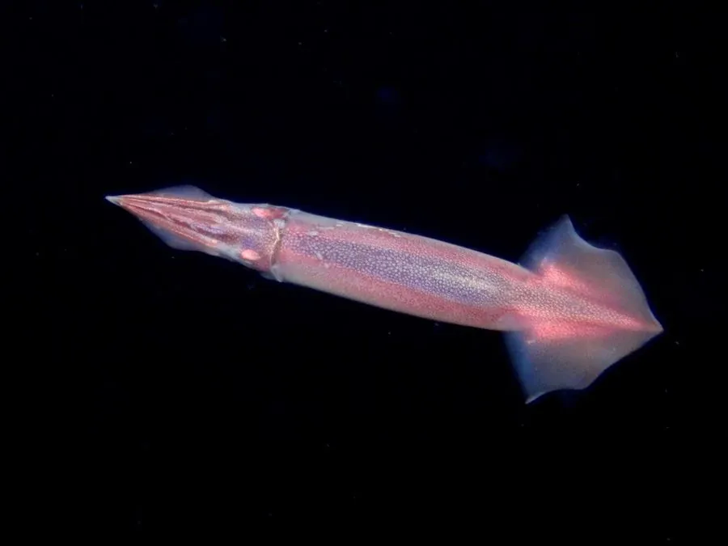

软体动物 · 动物界
太平洋褶柔鱼 Todarodes pacificus

西北太平洋重要的经济头足类，体呈流线型、尾端有三角形鳍，能长距离洄游，是日本、韩国和中国渔业常见的渔获。
- 分类
- 门软体动物门纲头足纲目枪形目科柔鱼科属褶柔鱼属
- 栖息环境
- 西北太平洋的大陆架与近海水域，随季节进行南北洄游
- 地理分布
- 西北太平洋，包括日本海、东海、黄海和日本太平洋沿岸
- 保护级别
- 暂无评估；中国未列入国家重点保护野生动物名录（重要渔业资源）
物种志
太平洋褶柔鱼体呈细长的流线型，躯干为圆筒状，末端尖细，两侧靠近尾部各有一片三角形鳍。它有 8 条腕和 2 条捕食触腕，腕上排列着吸盘，触腕末端膨大并带有吸盘；体内有一片透明的角质内壳，俗称“软骨”。体色粉红或灰褐，能随环境改变深浅。胴长一般 20–30 cm，最大可达 50 cm 左右，寿命约 1 年。
太平洋褶柔鱼分布于西北太平洋，从日本海、东海、黄海到日本太平洋沿岸都有分布，是季节性南北洄游的物种：春夏随暖流北上育肥，秋冬南下到较暖的海域产卵。它是肉食性动物，捕食小型鱼类、甲壳类和其他头足类，靠漏斗喷水的反作用力快速游动，受惊时喷墨掩护逃生。产卵场主要在东海和日本海西南部，卵粒黏结成团后随水漂流，孵化出的幼体经过一段浮游生活后开始快速生长。太平洋褶柔鱼是西北太平洋产量最高的头足类之一，也是日本鱿鱼加工的主要原料；其资源量受海温影响年际波动很大，目前没有IUCN 的正式评估，中国也未将其列入国家重点保护野生动物名录。
形态与习性
- 食性捕食小型鱼类、甲壳类和其他头足类
- 体长胴长一般 20–30 cm，最大约 50 cm
- 寿命约 1 年，产卵后死亡
- 洄游随季节南北洄游，春夏北上生长，秋冬南下产卵
- 繁殖产卵场主要在东海和日本海西南部，卵粒随水漂流
- 内壳体内有一片透明的角质内壳，俗称“软骨”
趣味知识
- 太平洋褶柔鱼的寿命大约只有一年，一生只繁殖一次。
- 它的年产量在西北太平洋头足类中名列前茅，是日本鱿鱼加工的主要原料。
- 它能靠漏斗喷水的反作用力快速游动，受惊时还会喷墨掩护逃跑。